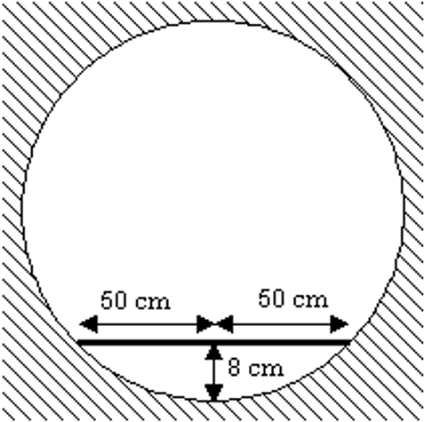

Favorite Puzzles
Number Guessing
A teacher says: I'm thinking of two natural numbers greater than 1. Try to guess what they are. The first student knows their product and the other one knows their sum.
First: I do not know the sum.
Second: I knew that. The sum is less than 14.
First: I knew that. However, now I know the numbers.
Second: And so do I.
What were the numbers?
1000 Lockers Problem
A school has exactly one thousand lockers, numbered from 1–1000, as well as one thousand students. Each year, the principal has closing ceremonies on the last day of school, during which she enlists the help of her students to close up the school’s lockers. She assigns each student a number, and asks him or her to help her one by one. These are the instructions she gives each of the students.
- Student #1: Go to every locker and open it.
- Student #2: Go to every second locker and close it.
- Student #3: Go to every third locker. If it is closed, open it, and if it is open, close it.
- Student #4: Go to every fourth locker. If it is closed, open it, and if it is open, close it.
- This goes on until Student #1000 is finished.
After the closing ceremonies are finished, the principal walks through the school and closes each locker that is left open. How many lockers will the principal close?
Painting a Carousel (excerpt from Car Talk)
RAY: This puzzler is from a fellow named Jerry Olsen. Ed and his two sons, Biff and Skip, have been hired to paint the floor of a merry-go-round. They want to make sure they measure the floor area exactly, because they don't want to buy any extra paint. The carousel, of course, is a circle. Here's the catch: In the middle of the carousel is a smaller circle, which contains all the machinery for the carousel.
TOM: An annulus, in other words.
RAY: Exactly. It's a ring we're dealing with. Ed tells Biff, "We need to know the area of the carousel, including the area of the big outer circle that we're going to paint and the area of the inner circle where there's nothing but the machinery. Once we have the areas of both circles we can subtract the inner circle from the other circle and we'll know how much paint we need."
Biff goes to the carousel and says to himself, "I can't do this. All the machinery is in the middle. I can't get to the center to measure the diameter." He thinks, "I'll cheat. The old man will never know!" Biff measures a straight line from one edge of the carousel to the other edge, not going through the center.
TOM: In other words he's going to make what's called a chord of the big circle.
RAY: Right. Any line that goes from one edge of the circle to the other that isn't a diameter is a chord. As luck would have it, the tape measure touches the inner circle, or in geometric terms, is tangent to the inner circle at one point.
Biff returns to his dad and says, "I couldn't do what you wanted me to do. I got this measurement and it's 70 feet." The old man administers a swift dope slap. He says, "How the heck are we going to figure this out. We don't know either diameter."
The other brother Skip says, "I think I can figure it out. "
How does he do it?
Measuring a Pipe
A surveyor places a meter stick against the base of a large circular underground pipe and finds that the midpoint of the stick is 8 cm from the pipe wall.
Use this information to find the inside diameter of the pipe.